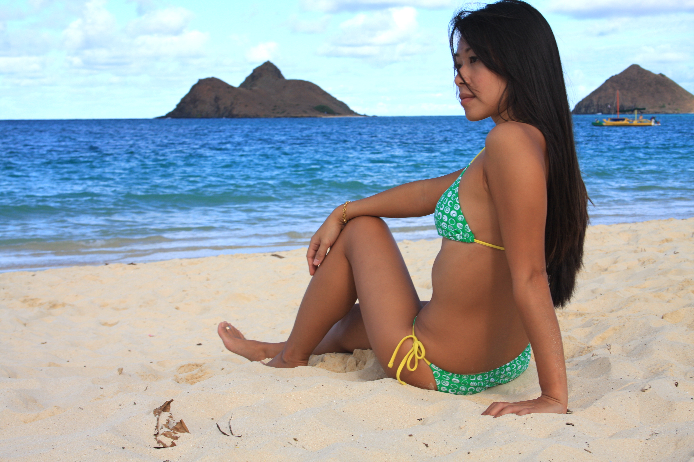

Services

Spray Tanning
Full Body Spray Tan - $XX.XX

Tanning Parties
3-4 People - $XX.XX
5+ People - $XX.XX
Spray Tanning
Other
Other
-
Karin's tan lasted like crazy, looked amazing and made the entire process of getting a spray tan fun, easy and incredibly convenient. She is fast, professional and truly an artist-- I have a very "in-between" natural skin tone and she mixed exactly the right color to make me look like I had a glowing perfect tan. I got tons of compliments and when it faded, it did so evenly so I never had that awkward patchy stage. She is A-List all the way.
Kate Rigg - Executive Producer Oxygen Networks and Comedy Correspondent for Dr. Phil
-
I play Arlene Fowler on HBO's hit show "True Blood". I have to be tan for the show, but I don't want to be in the sun. Karin's spray tan is far superior to any of the sunless products or spray tan machines I've used before. It really looks natural, and the makeup artists were thrilled when I came into work with her tan on my body. They loved the color and the way it held up at work. I will definitely come back for more!
Carrie Preston
-
I work in the news business and can't tell you how critical I can be when it comes to any beauty product or routine. So when I made an appointment for a spray tan with Karin I didn't get my hopes up. After rearranging her schedule for me several times, Karin came to my home, set up her portable booth and a few minutes later I had a gorgeous natural looking tan. My friends, who have nicknamed me "paleness" because of my fair skin, can't get over how pretty it looks. Can't wait to see Karin again soon...I know she'll make me more beautiful for my upcoming wedding day.
Dianne Derby
-
We planned a quaint and friendly gathering of about 40 people in Carmel, Ca. It was quite an overwhelming concept to plan such a wedding and reception from across the country in Jacksonville, Florida! We found IslandTan2Go.com online (with some others that we quickly eliminated). Your website was very informative and the pictures helped us so much being cross country. We loved that the concept of getting beautifully airbrushed tanned for the wedding would happen at the home we were staying at in Carmel, CA. We didn't know our way around, and we didn't have the time to tan 3 of us at a Salon. Karin was very friendly and professional. She was very helpful and fun in the precarious positions we found ourselves in during the drying process. Karin was also very confidential. Thanks to Karin and IslandTan2Go.com on the West Coast!!
Cindy Chisholm L'Herault (the Bride) & Robin Lawson (Wedding Planner)
-
I was planning a wedding in Hawaii, and I live in Louisiana. I had heard from a friend how amazing air brush tanning was rather than mystic tan, so I googled air brush tanning on Oahu, and I found a couple salons, but they were ridiculously over-priced, and almost impossible to get an appointment. I was due to arrive in Oahu on Thursday, and started emailing places on Oahu that Monday, and I happen to find Karin's site, and saw her fantastic prices AND that she travels to your home. I emailed her, and got a response that same day, and she set up an appointment for me on the day and time that was best for me. She was very professional; came to my mother's house with all her supplies, and air brushed me in the comfort of my own home. Then gave me great advice and supplies on how to keep my tan looking great for my wedding day. The tan looked amazing, and very natural, and I looked great on my wedding day. I followed her exact directions, and never looked orange or streaky, and everyone thought my tan was real. She did a great job, and was SO convenient-I would HIGHLY recommend her to anyone looking for a great tan with great service.
Stephanie J.
-
This was my first time doing an airbrush tan. I wanted to try because I'm extremely white but don't have the time to frequent the beach. This spray tan was AMAZING!! The process was simple and the results were so good!! I WAS REALLY TAN!! Thank you, Karin!!
Maya R.
-
I can honestly say that your blend of tanning solution solidified my firs4 place win in the Team Hawaii Bodybuilding and Figure Competition! This airbrush tan enhanced all the hardwork, dedication, and training that i put into competing. It really brought out the confidence in me and the definition in my body! I loved it! Your airbrush tanning will always be at the top of my list when it comes to showtime. Thank you so much Karin!
Jamie H. - 2008 Competitor of Team Hawaii Bodybuilding Championship ( First Place) and The Paradise Cup.
-
Hi Karin! I have to say this, I decided to try the standard ProTan coloring for the Paradise Cup because I felt like the spray tan left me too "red." However, after reviewing pictures from Team Hawaii and the Cup, your spray tan was hands-down the better coloring and the ease of application made it ten times better than the multiple coats of ProTan. I think I would have better appreciated the spray if I had done it the night before as was recommended. In my future comps, I will definitely be looking for you to do my coloring!
Tim G.- 2008 Competitor of Team Hawaii Bodybuilding Championship and The Paradise Cup
-
I highly recommend Karin to anyone looking for a tan. She is thorough, complete, and very professional. The tan is very consist ent, the color is excellent, and I never came out looking orange! As a model, I use only Karin. She is THE best on the Island.
Ray H.
-
Thank you for coming over to my home and making it so convenient for me to get a perfect tan in preparation for The Paradise Cup! My skin never looked so evenly tanned and glowing! I look forward to working with you again soon on my next competition in April! Thanks again Karin!
Leilani J. - 2008 Competitor of Team Hawaii Bodybuilding Championship and The Paradise Cup
-
I've done several physique competitions and have always dreaded painting on my tan. It would take several times and with having 2 kids it could get messy. My tans never seemed to be as dark as the other competitors on stage. When I did my last competition, I found out about Island Tans 2 Go and contacted her immediately. When I saw that I only had to be spray painted once for the competition I made an appointment. It was a perfect all over even tan and was as dark or darker than anyone else there! Karin went out of her way to make everything perfect for me. Thanks Karin!
Megan C. - 2008 Competitor of The Paradise Cup and Owner of Extreme Beach Boot Camp in Honolulu
-
I didn't want to waste time sitting in the sun to get a tan, instead I called Karin over at islandtan2go.com to get a easy, fast and convenient tan. Now I look great!
Taylor R.